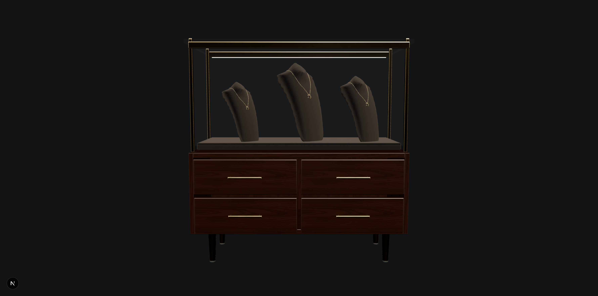
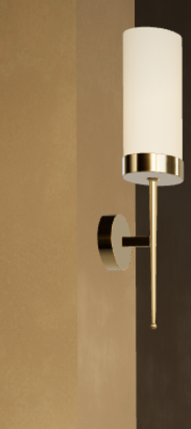
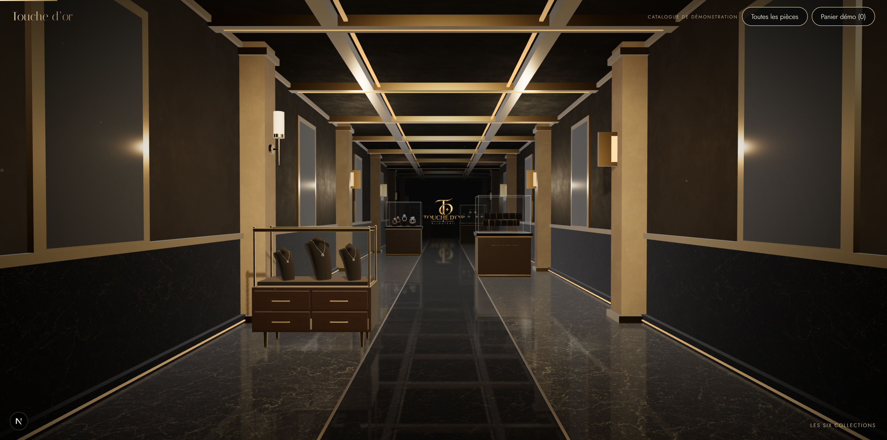

Maison noire — vitrine et applique contemporaines
Meuble GEM remplacé, trois bustes conservés et réorientés, vitrage frontal unique, reflets HDRI et LED locales. Une seule applique verticale est proposée à la validation.
Avant à gauche · Après à droite. Même caméra, 1780 × 883, GPU RTX 3060.
Vue de face isolée : caméra technique distincte, caméra de visite intacte. Construction téléchargée, tiroirs, pieds et montants fins.
Applique pilote : 78 cm, tige et fixation détaillées, diffuseur opalin chaud.
Vue générale sur la trajectoire d’origine. Les cinq autres vitrines et les autres appliques restent inchangées.Mesures avec accélération matérielle
NVIDIA RTX 3060 / Direct3D11, 180 images par point, DPR 1. Cadence de présentation proche de 144 images/s ; aucun débit maximal revendiqué.
| Mesure | Avant | Après |
|---|
| Intervalle moyen entre images (ms) | 6,94 | 6,94 |
| P95 entre images (ms) | 7 | 7 |
| Soumission CPU du rendu au premier arrêt (ms) | 1,53 | 1,41 |
| Soumission CPU du rendu à l’entrée (ms) | 1,78 | 1,86 |
| Triangles soumis, reflet compris | 208 333,5 | 191 048,02 |
| Appels de dessin, reflet compris | 259,32 | 257,57 |
| Tampons géométriques CPU (octets) | 5 703 564 | 5 223 634 |
| Textures GPU | 52 | 51 |
35/35 contrôles navigateur et 13 invariants historiques passent. Aucune erreur console ou réseau. Aucun déploiement.
Rapport, limites et ressources · Tests navigateur · Mobile · Provenances et licences
Pilotes soumis à votre validation visuelle avant généralisation.